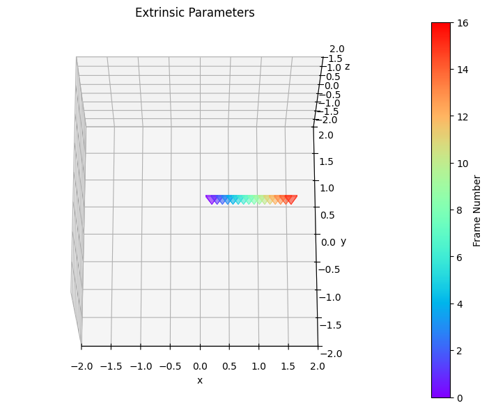
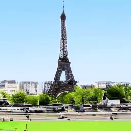
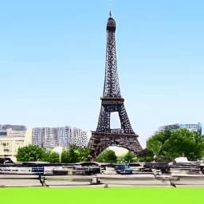
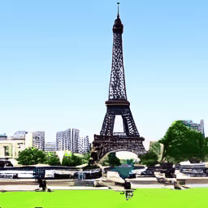

Recent advancements in diffusion models have significantly enhanced the quality of video generation. However, fine-grained control over camera pose remains a challenge. While U-Net-based models have shown promising results for camera control, transformer-based diffusion models (DiT)—the preferred architecture for large-scale video generation—suffer from severe degradation in camera motion accuracy. In this paper, we investigate the underlying causes of this issue and propose solutions tailored to DiT architectures. Our study reveals that camera control performance depends heavily on the choice of conditioning methods rather than camera pose representations that is commonly believed. To address the persistent motion degradation in DiT, we introduce Camera Motion Guidance (CMG), based on classifier-free guidance, which boosts camera control by over 400%. Additionally, we present a sparse camera control pipeline, significantly simplifying the process of specifying camera poses for long videos. Our method universally applies to both U-Net and DiT models, offering improved camera control for video generation tasks.
SOTA camera control methods for U-Net : MotionCtrl and CameraCtrl lose controllability and motion in DiT (diffusion transformer) architecture. Our method restores controllability and boosting motion.


MotionCtrl method in DiT is uncontrollable


CameraCtrl method in DiT has limited motion


Our method restores camera controllability with boosted motion.


Increasing guidance scale boost camera motion. Our method has good disentanglement from text guidance which controls the video content and appearance.
Camera Pose
CMG scale = 0
CMG scale = 1
CMG scale = 2
CMG scale = 3
CMG scale = 4
CMG scale = 5
CMG scale = 6
CMG scale = 7
Our data augmentation method enable sparse camera control. Videos with sparse camera control (b-e) resemble motion with dense control (a).


(a)
(b)
(c)
(d)
(e)
(i) The first and last camera pose is facing straight, thus the generated motion (rightmost) contains only translation with no rotation.


(ii) Now by adding rotation to the last frame in (e), our model 'interpolate' the missing poses to create smooth trajectory with rotation.
@article{cheong2024cmg,
author = {Cheong, Soon Yau and Mustafa, Armin and Ceylan Duygu and Gilbert, Andrew and Huang, Chun-hao Paul},
title = {Boosting Camera Motion Control for Video Diffusion Transformers},
journal = {Arxiv Preprint 2410.10802},
month = {October},
year = {2024}}